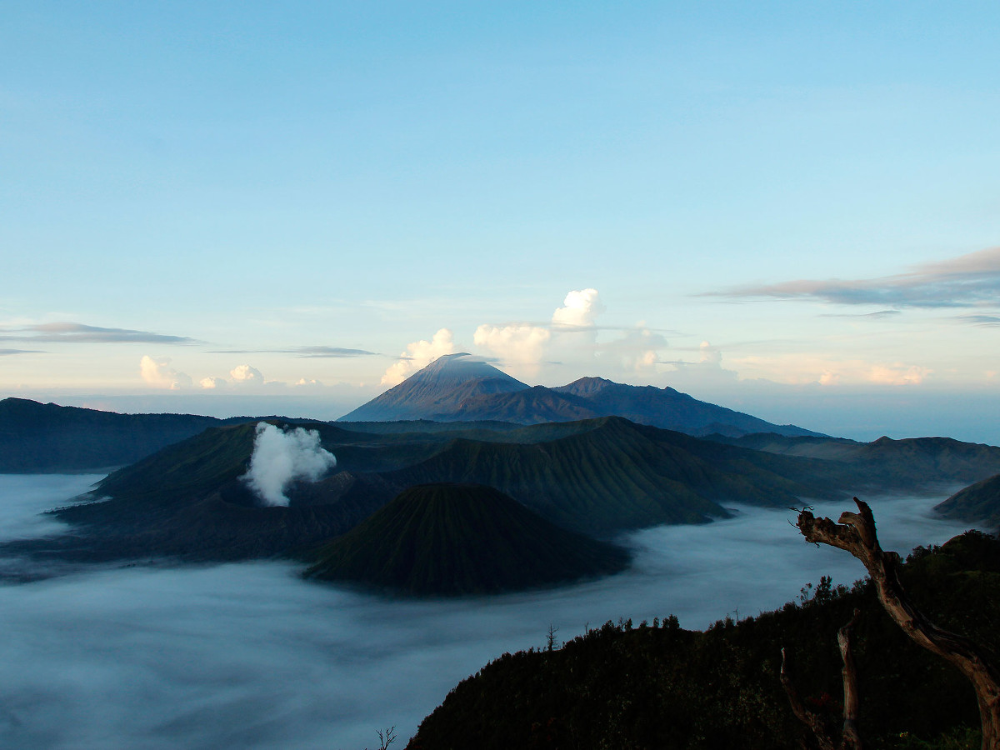

Gunung Bromo
Semeru, Jawa Timur, Indonesia | 2,329 MDPL
Melihat keindahan sang surya terbit dari ufuk timur di Gunung Bromo secara perlahan mungkin menjadi satu anugrah yang tak terhingga indahnya. Paduan warna kuning, oranye, hitam dan biru yang dihasilkan oleh fenomena alam ini sungguh menjadi pemandangan menarik yang tersaji bagi mata kita yang melihatnya.

Keindahan Gunung Bromo yang berada di dalam Kawasan Gunung Semeru memang sudah terkenal hingga ke mancanegara. Gunung ini dianggap suci oleh masyarakat Tengger, suku yang mendiami wilayah Gunung Bromo. Nama Bromo sendiri diambil dari nama dewa utama umat hindu yaitu Brahma.
Melakukan perjalanan menuju Gunung Bromo, kaki kita akan disambut kawah pasir yang terbentang sepanjang kawasan salah satu gunung di Jawa Timur ini. Bila kita melakukan perjalanan menuju Bromo di pagi hari, kita akan disajikan warna-warna indah berasal dari pasir yang terkena pantulan sinar matahari. Pasir-pasir disini juga seolah berbisik saat tersapu oleh tiupan angin yang berhembus tenang saat pagi menyapa.
Sambil berjalan, kita bisa melihat beberapa bangunan yang berdiri di sekitar kawasan ini. Salah satunya adalah bangunan Poten. Bangunan kokoh yang berdiri di tengah lautan pasir ini menjadi tempat beribadah yang digunakan masyarakat Suku Tengger. Arsitektur bergaya Hindu Bali sangat melekat pada bangunan ini. Di setiap gerang pintunya di jaga patung dengan bentuk singa yang terlihat seperti sedang menyeringai. Patung-patung ini dimaksudkan untuk mengusir roh-roh jahat yang akan menggangu kawasan Gunung Bromo.
Bukan hanya menjadi tempat wisata, Gunung Bromo juga menjadi tempat digelarnya ritual keagamaan umat hindu. Salah satu ritual yang digelar Suku Tengger di sini setiap tahunnya adalah ritual Yadnya Kasada. Dalam ritual ini, Masyarakat Suku Tengger mempersembahkan sesajian berupa binatang ternak dan makanan untuk para dewa-dewa yang mendiami gunung-gunung yang berada di kawasan ini seperti Gunung Semeru, Batok, Bromo dan Pananjakan.
Berada di Kawasan Gunung Bromo dan menyaksikan keindahan alam yang disajikan disini memang menjadi pengalaman yang tak terlupakan. Pasir yang eksotis, sunrise yang begitu indah dan berinteraksi dengan masyarakat Suku Tengger tentunya membuat perjalanan menelusuri Kawasan Gunung Bromo terasa begitu menyenangkan.